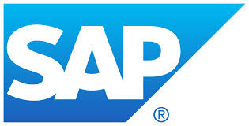

Currículo e Projetos
Lucas Moreira de Souza
- Brasileiro, Solteiro, 31 anos.
- Endereço: Rua Dr. Enéas de Lucena, 265, Apto. 2101, Encruzilhada, Recife, PE – Brasil.
- Celular: +55 11 98195 3775 – Email: souzalm@gmail.com – Skype: rsouzalm
-
 www.linkedin.com/in/souzalm
www.linkedin.com/in/souzalm
 https://github.com/souzalm
https://github.com/souzalm
.jpg)
Tecnologias
| Tecnologia | Experiência | Tecnologia | Experiência | Tecnologia | Experiência | Tecnologia | Experiência | Tecnologia | Experiência | Tecnologia | Experiência |
|---|---|---|---|---|---|---|---|---|---|---|---|
 Java Java |
1 mês |  |
1 mês |  JavaScript JavaScript |
1 mês |  HTML HTML |
1 mês | .png) CSS CSS |
1 mês |  | 1,5 ano |
Resumo profissional
Atualmente cursando Graduação em Análise e Desenvolvimento de Sistemas e Mestrado Acadêmico em Engenharia de Produção com ênfase em Gestão e Inovação. Graduação em Eng. de Produção pela Universidade Federal de São Carlos (UFSCar). Experiência em departamento de pesquisa universitária, organizações não-governamentais, consultoria na área socioambiental e em TI: Laboratórios SimuCAD/Ergo&Ação - UFSCar, ONG NAPRA, Consultoria Décima Visão e Accenture. Disponibilidade para mudança de cidade e viagens.
Experiência profissional
- Manusa do Nordeste - Recife, Brasil – Consultor – 02/2017 a 07/2017.
- Descrição: Análise e Configuração de Sistemas (Go.on) na utilização na área de prestação de serviço em manutenção; Elaboração de indicadores, gráficos e relatórios com base em banco de dados no Excel; Elaboração de Manual Descritivo e treinamento das operações necessários para operar as planilhas e os sistemas.
- Accenture Brasil - São Paulo, Brasil – Technology Consulting Analyst – 02/2015 a 11/2016.
-
Descrição: Experiência em projetos (Waterfall e Agile) de implantação de SAP módulos MM, FI, CO, PM, SD, CS, HR, atuando em especial, na frente Funcional e de Conversão de Dados, administrando e gerando arquivos de carga, elaboração de Functional Specification (FS), processo de validação e reuniões de alinhamento. Elaboração e execução de LSMW´s (Batch Input, Direct Input e BAPI), assim como análise de log´s. Execução e análise de erros de IDoc´s. Configuração de Ordens do módulo SD e de Catálogos no módulo PM. Transporte de Requests.
Projetos: Johnson&Johnson“Back to Basis” – 07/2016 – 09/2016 – SAP Implementation (Agile); Sotreq“FULL SAP” – 09/2015 – 02/2016 – SAP Implementation (Waterfall); Sanofi Aventis “Finance and Procurement Transformation” – 03/2015 – 08/2015 – SAP Transformation (Waterfall). (Detalhamento das atividades nos projetos, no final da página.) - Décima Visão Comércio e Serviços Ltda. – São Paulo/Oriximiná, Brasil – Estágio em Eng. de Produção – 04/2013 a 12/2013.
- Descrição: Elaboração de layout de fábrica; Mapeamento e Modelagem de processo de produção; Pesquisa de tecnologias de equipamentos industriais e fornecedores; Pesquisa de instruções normativas e legislação tributária; Balanço tributário; Análise de Custos, Análise e Projeção Financeira e Análise de Viabilidade Econômica com apoio do software Excel; Elaboração de Plano de Negócios adequado à realidade de uma unidade de processamento de castanha-do-Brasil (UBC) por uma cooperativa agroextrativista quilombola no estado do Pará (Brasil). Este empreendimento beneficia 288 extrativistas florestais.
- SimuCAD/Ergo&Ação/UFSCar – São Carlos, Brasil – Estágio em Pesquisa e Extensão em Engenharia de Produção – 09/2010 a 12/2013.
- Descrição: Participação no projeto de pesquisa: Trabalho e Inovação Tecnológica em Agricultura Orgânica. Elaboração e execução da pesquisa: As transformações tecnológicas na produção familiar de farinha de mandioca: um estudo de caso sobre a farinha d´água; Elaboração de questionário adequado a realidade da pesquisa; Gravação em vídeo de entrevistas semi-estruturadas; Sistematização de dados e edição de vídeos; Pesquisa em tecnologia, processo, modelagem e desenvolvimento de fábrica e layout, saúde e segurança de trabalho; Uso do método Análise Ergonômica do Trabalho nesses projetos e pesquisas.
Experiência voluntária
- Núcleo de Apoio a População Ribeirinha da Amazônia (NAPRA) – São Carlos e Porto Velho, Brasil – Coordenador Regional, de Campo e de Formação – 11/2010 a 04/2014.
- Descrição: Elaboração de planos de trabalho, relatórios e projetos com grupo interdisciplinar nas áreas de Saúde, Educação e Geração de Renda; Gestão de projetos; Elaboração e execução de projeto para gestão estoque, beneficiamento, comercialização e acesso a crédito para produção agrícola e extrativista sustentável de associações com mais de 80 famílias de agricultores e extrativistas; Coordenação de uma equipe com 60 graduados e pós-graduados por ano; Coordenação de projeto de intervenção socioambiental em uma comunidade ribeirinha com mais de 2500 habitantes; Mediação de reuniões com instituições locais e lideranças; Articulação com moradores e líderes locais para inserção e desenvolvimento de atividades; Organização de eventos semanais para conhecimento das comunidades sobre questões da Amazônia; Organização e mediação de reuniões de grupo para formação, estratégia e planejamento.
- Associação Cultural Rochedo de Ouro – São Carlos, Brasil – Coordenador Técnico, Financeiro e Percussionista – 03/2009 a 12/2013.
- Descrição: Responsável pelas atividades de barista e caixa em shows e eventos; Responsável pela gestão financeira da associação; Fechamento de caixa; Balanço, Reembolsos e Prestação de contas; Arquivo, Documentação e Organização de faturas; Acompanhamento de conta de pessoa física e jurídica; Elaboração e execução do projeto “Ponto de Cultura - Articulando Redes” de oficinas de cultura digital em software livre, experiências de produção multimídia, eventos culturais e apresentações.
Formação
- Graduação em Análise e Desenvolvimento de Sistemas – Universidade Tiradentes – 02/2020 – 02/2022
- Mestrado Acadêmico em Engenharia de Produção ênfase em Gestão e Inovação – UFRJ – 03/2018 – 07/2020
- Academia SAP MM – Ka Solution – São Paulo – Consultor – Fevereiro de 2015 – (Carga horária: 120hrs)
- Curso de Inglês – ELTA (English Language Tutorial Academy) - Dublin, Irlanda – Nível Avançado – Junho a Setembro de 2014 – (Carga horária: 256h)
- Graduação em Engenharia de Produção – Universidade Federal de São Carlos – 2008/2013. São Carlos, São Paulo, Brasil.
- Formação em Intervenção Socioambiental – ONG NAPRA – 11/2010 a 11/2013. Porto Velho/Rondônia e São Carlos/São Paulo, Brasil. (Carga horária: 378h). Habilidades e Conhecimentos: Desenvolvimento comunitário e Contexto socioambiental da Amazônia; Processos participativos de gestão e Gestão de organizações do terceiro setor; Oficinas de gestão e elaboração de projetos e estudo em grupo.
- Curso de AutoCAD 2007 e 2010 – SimuCAD/DEP/UFSCar – São Carlos, Brasil – 08/2010 a 12/2010 – (Carga horária: 64h).
- Curso de Espanhol – Íbero Spanish School – Buenos Aires, Argentina – Julho de 2010 – Intermediário – (Carga horária: 60h).
Publicações
- Desenvolvimento tecnológico e Análise da Demanda na produção familiar de farinha de mandioca: o caso da farinha d´água. Revista Ação Ergonômica: Revista da Associação Brasileira de Ergonomia. ABERGO. São Carlos, SP. 2015.
- Processo e Técnica na Análise da Demanda na produção familiar de farinha de mandioca: o caso da farinha d´água. Poster. XVII Congresso Brasileiro de Ergonomia. ABERGO. São Carlos, SP. 2014.
- Tecnologias e Técnica na Análise da Demanda na produção familiar de farinha de mandioca: o caso da farinha d´água. Poster. XVII Congresso Brasileiro de Ergonomia. ABERGO. São Carlos, SP. 2014.
Projetos
- Johnson&Johnson – Role: FI/CO Consultancy:
-
1. Data Conversion: Functional Specification (FS) elaboration, preparation of programs by LSMW, generation of load files, validations control and alignment meetings. Modules CO, FI and MM.
-
Conversion of Cost Centers;
Conversion of Profit Centers;
Conversion of Chart of Accounts;
Conversion of Vendors;
Conversion of Customer Credit Limit;
Conversion of Fixed Assets;
Conversion of G/L Balance;
Conversion of Open AP;
Conversion of Open AR;
IDocs execution.
- Sotreq – Role: MM/SD/PM/Conversion Analyst:
- 1. Data Conversion: Functional Specification (FS) elaboration, Cutover Plan Management, preparation of programs by LSMW, generation of load files, validations control and alignment meetings. Modules CO, MM, SD, SC (SM), HR, PM.
-
Conversion of Cost Centers and Profit Centers;
Conversion of Work Centers;
Conversion of Measurement points and Measurement Documents (medium complexity);
Conversion Equipment (medium complexity);
Conversion of Customer;
Conversion of Class and Characteristc;
Conversion of Material Data;
Conversion of Employee record sheet;
Conversion of Task List;
Conversion of Functional Locations;
Conversion of Price List;
Conversion of Contracts;
Conversion of Tables Z;
Conversion of Catalogs (medium complexity);
Conversion of Standard Text;
Conversion of Guarantees.
2. Fix Management by Sharepoint and correction;
3. Progress Mocks Management Plan (Cutover) by Project.
- Sanofi – Role: MM/Conversion Analyst
- 1. Data Conversion: FS and SIR elaboration, preparation of programs by LSMW, generation of load files, validations control and alignment meetings. Modules CO, FI, MM.
-
Conversion of open Purchase Orders (high complexity);
Conversion of IO OpEx and CapEx (high complexity);
Conversion of Material Master Data;
Conversion of Fixed assets;
Conversion of G/L Balance.